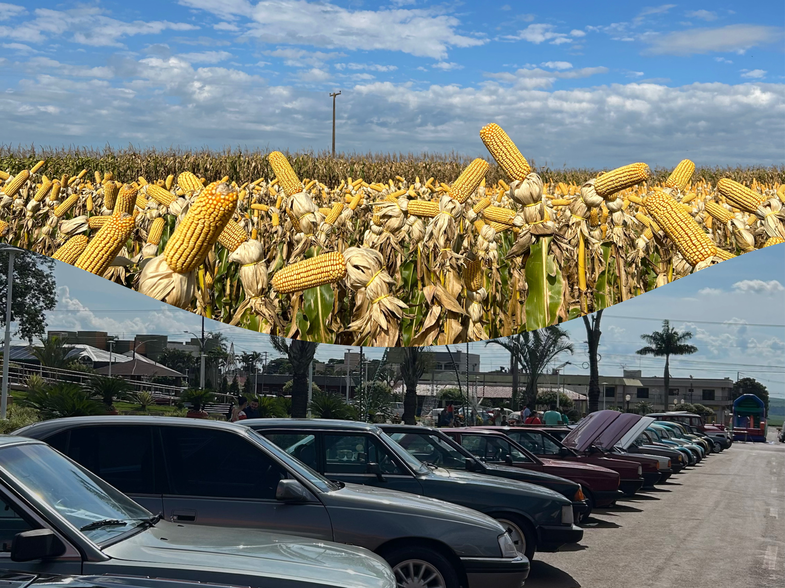

Agrinho
O Agrinho é um projeto dedicado a promover a sustentabilidade e fortalecer os laços entre o campo e a cidade.
"Quando o campo e a cidade trabalham juntos, construímos um futuro mais sustentável, inclusivo e próspero para todos.".
Sustentabilidade
A sustentabilidade começa com pequenas ações. Seja na cidade ou no campo, cada gesto conta para preservar o meio ambiente e garantir qualidade de vida para as futuras gerações.
- Plante árvores
- Reduza o consumo de plástico
- Valorize a agricultura sustentável
Participe!
Junte-se ao Agrinho e seja parte dessa transformação! Conecte o campo e a cidade em prol da sustentabilidade.